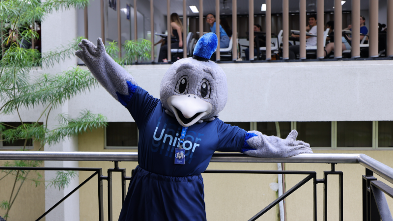

O Show Vai Além
Conectamos estudantes através de uma experiência acadêmica única


O Aproveita é uma plataforma inovadora que busca facilitar a vida acadêmica dos estudantes. Com funcionalidades como organização de conteúdos, lembretes inteligentes e acompanhamento de notas, o sistema oferece uma experiência completa para quem deseja otimizar seus estudos.
A interface intuitiva permite que você visualize cronogramas de avaliações, salve materiais importantes e configure alertas personalizados para nunca perder prazos. Além disso, a comunidade integrada possibilita a troca de conhecimentos e materiais entre colegas.
Desenvolvido por Matheus Dresch Donatelli, o Aproveita é mais do que uma ferramenta, é um aliado na sua jornada acadêmica. Experimente e descubra como é fácil manter tudo sob controle!